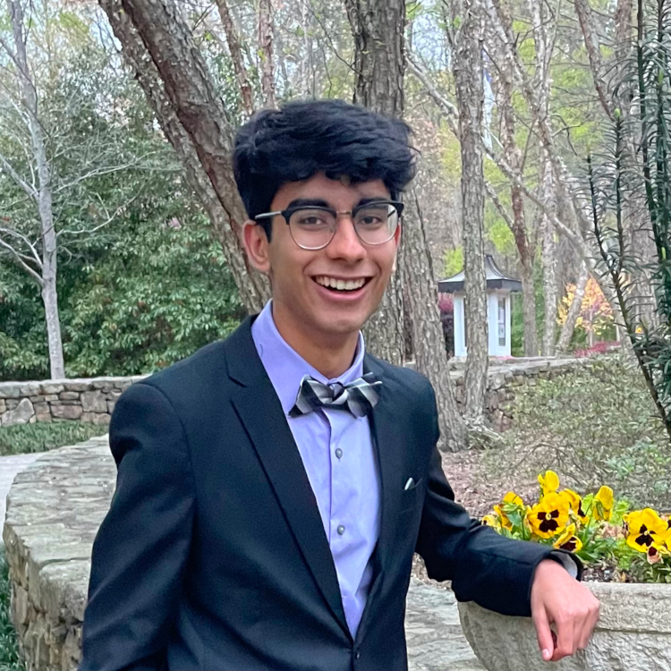
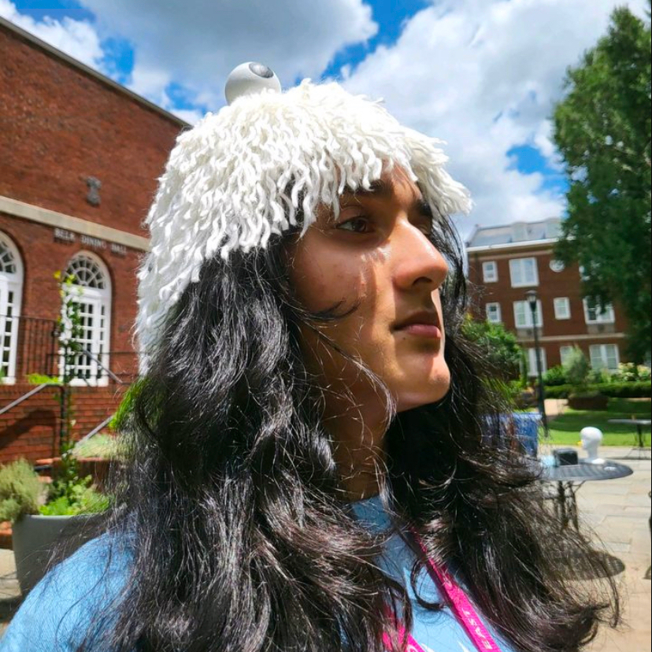

EducateUS is currently tutoring at Kernodle Middle School every Tuesday after school from 3:30-4:30. Our tutors
are available to answer any questions about math, reading, science, or social studies. We are happy to help
students review old content or guide them as they learn something new.
Get to Know the Tutors:
Ayush Khanna
Co-President

I'm currently a senior at ECG. I enjoy tutoring as it allows me to make a positive
difference in my community by helping students. I've always enjoyed math, and tutoring provides an
outlet for me to turn this academic interest into a service initiative.
Austin Irwin
Co-President
Hey all! I'm a senior at ECG that loves all things sports. I run cross country at
Northwest Guilford and love to watch football and basketball. I'm very close with my older sister
and younger brother. We have three pets: a large black cat, a yellow lab, and small cava-poo who just
had puppies. I love to tutor because I love the people I do it with. Being able to help students with
the same content I once stuggled through is extremely rewarding
Zoe Auld
Standardized Testing Lead
Care to talk about the outdated jury system of the United States?
Jiya Patel
Secretary

Hello! I'm Jiya, and I'm a senior! I love the outdoors and run cross country! I like
playing video games and have a very chunky 11-year Rottweiler named coco! If you ever see me, I
would be more than happy to show you some pics of her! :) I think tutoring is a great way to get
that extra help on subjects you feel a bit uneasy about, and tutoring at Educate US is awesome! It's
very laid back, and everyone at Kernodle is really nice! Learning about the students and seeing them
make new friends is also a major plus! :)